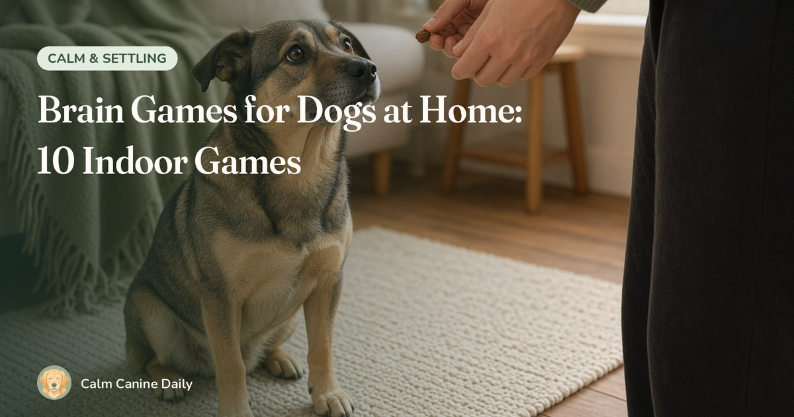

Brain Games for Dogs at Home: 10 Indoor Games With No Fancy Toys

The short answer. Pick one indoor brain game, keep it to about 5–10 minutes, and make the first round easy. Use a start and a finish cue so the search does not last all afternoon. End while your dog still wants more, then offer water and a settle on a bed or mat. Rotate games through the week so they stay interesting.
If you want brain games for dogs at home, you do not need a cart of puzzle toys or another long loop around the block. A short thinking session in the kitchen can leave many dogs readier to rest than one more round of fetch. Walks still count; they are just not the only way to wear a dog out. For why “more tired” is not always “more settled,” read why a tired dog still won’t settle. This page is the activity menu: ten indoor games with stuff already in the house, then a real rest.
This is a researched how-to, not a hands-on trial of these games on a panel of dogs, and not a guaranteed settle.
Educational content only. Some links on this page are affiliate links. If you purchase through one, we may earn a commission at no extra cost to you. We do not impersonate or speak for any course creator.
About this article. Educational tips from Calm Canine Daily for everyday US owners. This is not veterinary advice, a diagnosis, or a promised result. We are not a certified training practice and we do not claim CPDT or DVM credentials. If you are worried about a bite risk or a situation you cannot manage safely, pause and get qualified in-person help.
Who this plan is for: everyday US owners who want short indoor mental games with kitchen-level gear, then a real rest. Who this is not for: a dog who is a bite risk around food, toys, or hands, or a panic-level problem that is not fair to practice at home. That needs a veterinarian or a certified in-person professional.
Key takeaways
- Short indoor brain games can help many dogs wind down when another walk is not practical.
- Keep sessions brief, start easy, and end while your dog still wants to play.
- Use a start and finish cue so a search does not last all afternoon.
- Follow a game with water and a settle — the rest is part of the plan.
- Fancy puzzle toys are optional. If you shop later, use our puzzle-toy buying guide.
In this article
- Why indoor brain games wear a dog out faster than another lap around the block
- What not to do
- How to run a session
- 10 brain games for dogs at home you can play today
- A simple weekly rotation
- When to get extra help
- FAQ
Why indoor brain games wear a dog out faster than another lap around the block
A walk is useful. What it does not always do is ask your dog to think — to search, choose, wait, or solve a small problem. Indoor games do that in a small space. Many owners notice that ten focused minutes in the kitchen leave a dog softer in the shoulders than a second lap that only added more arousal. That is not a scientific ranking of “mental versus physical.” It is a practical observation: if your dog still ricochets off the sofa after a walk, a short thinking job plus a settle often helps more than more speed.
What not to do
Don’t turn it into marathon fetch in the hallway. Sprinting until they flop is not the same as helping them come down, and some dogs get giddier, not calmer.
Don’t make the first round so hard they give up. Start easy and let them win. A beginner facing a treat under three towels and a closed box may walk off — or start shredding out of frustration.
Don’t leave a chewing puppy unsupervised with a box, a plastic cup, or a frozen toy they can break and swallow. Stay in the room.
Don’t let a search last all afternoon. Give the game a start and a finish, then pick up the props.
How to run a session
Pick one game in one room. Cue the start with “find it” or “okay, search,” and make the first reps easy. Keep it to about five to ten minutes (less for a puppy), and end while they still want more. Say “all done,” pick up the props, offer water, and ask for a settle on a bed or mat. A calming dog bed helps if they do not already have a favorite spot.
If they cannot focus — pacing, snapping at the toy, ignoring food — the game is too hard, the room is too busy, or they needed a potty break first. Lower the difficulty or try again later.
10 brain games for dogs at home you can play today
A muffin tin, cups, a towel, a cardboard box, and regular kibble will cover almost this whole list.
1. The treat hunt
Scatter a small handful of kibble in a familiar room — under a rug edge, beside a chair, on a clear patch of floor. Say “find it,” leave most pieces in the open at first, and stay with them so cords and socks stay out of the game.
2. The muffin-tin game
Drop a treat in several muffin cups and cover each one with a tennis ball or a crumpled paper ball. Your dog nudges the cover to get paid. Start with two or three filled cups; an egg carton works the same way.
3. The cup game
Hide a treat under one of two or three cups and shuffle them slowly. Let your dog sniff, choose, and get paid for the right cup. Lift it for them the first few times if they need the idea.
4. The towel snuffle
Sprinkle kibble down a bath towel and loosely roll it. Let your dog snuffle to find the food. Skip this if your dog shreds fabric and you cannot stay right there.
5. The box search
Toss a few treats and some crumpled paper into a clean shipping box. Amazon or UPS cardboard is fine once you remove staples and heavy tape. Let your dog investigate, then put the box away. Supervise the whole time.
6. Hide-and-seek
Ask someone to hold your dog, or cue a sit. Step around a corner, call their name, and pay well when they find you. Hide in easy places first. This is a bonding game at home, not a treatment for panic when you leave. If your dog falls apart when you are gone, talk with a veterinarian or a qualified professional.
7. A simple trick
Pick one small behavior: a hand touch, a spin, or a chin rest. Lure once or twice, mark the move, and pay. Three to five good reps is a session.
8. “Find it” in one room
Send your dog out, hide three treats in one room — one easy, one medium, one tougher — then invite them in with “find it.” One room keeps the search from lasting all afternoon.
9. A frozen food toy
Smear a little wet food or plain yogurt (no xylitol, and only if your vet is fine with that food) into a hollow toy, lick mat, or muffin cup, and freeze it. Or wet a washcloth, sprinkle kibble in the folds, roll it, and freeze it. Supervise, and take it away if they start eating the cloth. A store-bought lick mat or frozen food toy is optional.
10. A short wait for dinner
Put the bowl on the counter and wait for a sit or a pause. Lower the bowl; if they lunge, lift it. When they hold still for a beat, set it down and release with “okay” or “free.” Start with one or two seconds.
A simple weekly rotation
You do not need all ten games every day. Pick one or two, keep them short, and change the menu so it does not go stale. If one game is a hit, repeat it; if one frustrates them, drop it. After the game, a few minutes on a bed is how the work turns into a calmer evening. The free 7-Day Calm Dog Checklist has a short daily settle habit if you want a simple loop for this week.
When to get extra help
Get a veterinarian involved if your dog suddenly cannot settle, seems painful, or a once-easy game now leads to snapping at hands, toys, or other pets. Get a qualified trainer or behavior professional involved (CPDT-KA or CBCC-KA are one useful filter) if play turns into a fight over the props or you cannot safely take a toy back. An article is not enough in those cases, and neither is an online course. Brain Training for Dogs is not for a bite-risk dog or a panic-level problem that is not fair to practice at home.
FAQ
What are the best brain games for dogs at home?
The best ones are short, easy to start, and use what you already have. A treat hunt, a muffin-tin game, a towel snuffle, a cup game, and “find it” in one room cover most dogs. The “best” game is the one your dog can do without getting frustrated.
How do I mentally tire my dog indoors?
Give them a short job that asks them to sniff, choose, or wait, then help them rest. Five to ten minutes of one game, a drink of water, and a settle on a mat will do more for many dogs than an hour of restless pacing.
How long should a brain-game session last?
About five to ten minutes is plenty for most adult dogs. Puppies may need less. End while they are still interested. If they walk away, pant hard, or start shredding the props, stop and try a shorter, easier round next time.
Are puzzle toys enough mental stimulation for dogs?
They can be part of the plan, especially on busy days, but they are not the whole plan. A toy that dispenses food does not teach a start cue, a finish cue, or a settle afterward. If you are shopping, see our guide to the best puzzle toys for bored, hyper dogs.
Can brain games help a hyper dog settle down?
They can help when you keep the session short and follow it with a real rest. If games only wind your dog up, shorten them and put more effort into the settle that comes after. If nothing helps, talk with your veterinarian or a certified trainer.
Related guides
- Why a Tired Dog Still Won’t Settle
- Best Puzzle Toys for Bored, Hyper Dogs
- Best Calming Dog Beds for Anxious Dogs
- Brain Training for Dogs review
- More calm and settling guides
- Get the free 7-Day Calm Dog Checklist
Sources
Vendor facts about Brain Training for Dogs (number of games, level names, treasure-hunt and muffin games, advertised $67 price, and 60-day guarantee) are from the official sales page as checked on November 21, 2026: braintraining4dogs.com/get-btfd and braintraining4dogs.com. Confirm current terms at checkout.